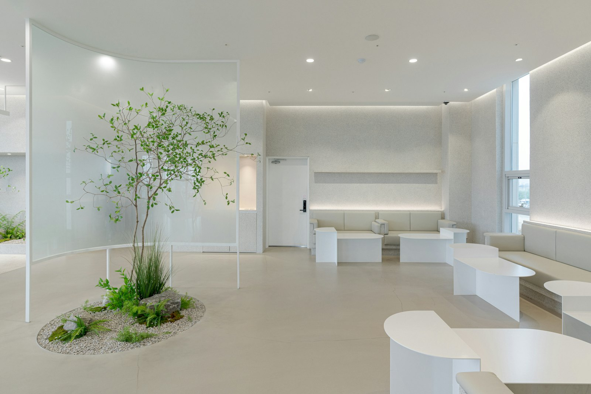
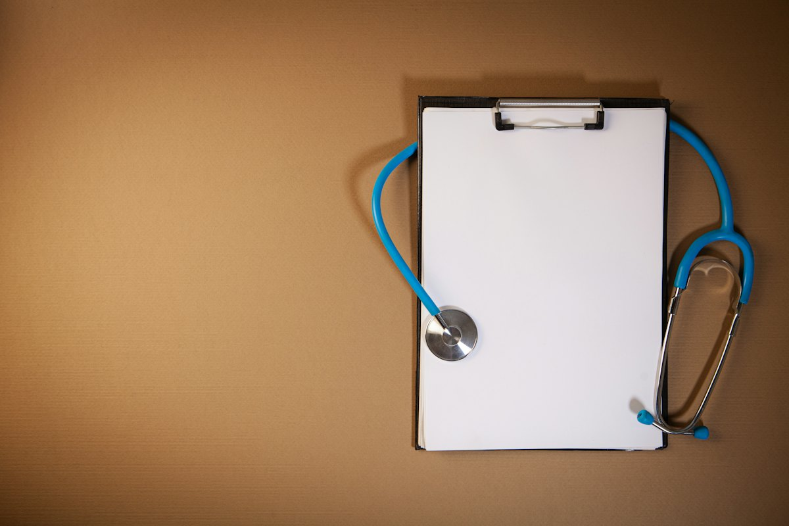
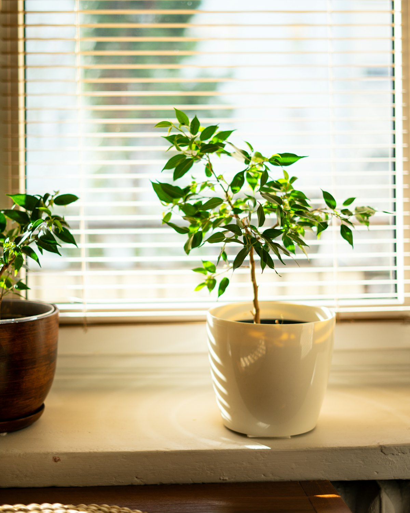

우리 동네 가정의학과
감기부터 혈압까지,
편하게 들르는 동네 의원
- 평일
- 09:00 – 19:00
- 토요일
- 09:00 – 13:00
- 점심
- 13:00 – 14:00
- 감기 · 독감
- 예방접종
- 건강검진
- 혈압 · 당뇨 관리
- 알레르기 · 비염
진료 안내
가벼운 감기부터 오래 관리해야 하는 만성질환까지, 온 가족이 한 곳에서 진료받을 수 있어요.
-
감기 · 독감 · 장염
열, 기침, 콧물, 배탈처럼 갑자기 찾아온 증상을 진료합니다.
-
고혈압 · 당뇨 · 고지혈증
정기적으로 수치를 확인하고 약과 생활 습관을 함께 조정하는 만성질환 관리입니다.
-
예방접종
독감, 폐렴구균, 대상포진, 파상풍 등 성인 예방접종을 받으실 수 있어요.
-
건강검진
국가건강검진과 채용 검진을 합니다. 검진 결과는 진료실에서 직접 설명해 드립니다.
-
알레르기 · 비염 · 천식
계절마다 반복되는 코와 피부, 호흡기 증상을 살피고 생활 속 관리법을 알려 드려요.
-
금연 · 수면 · 피로 상담
잘 낫지 않는 피로와 수면 문제, 금연 계획을 함께 이야기하고 필요한 검사를 안내합니다.


처음 오시는 분께
- 접수신분증을 가지고 2층 접수대로 오세요. 네이버 예약을 하셨다면 성함만 말씀해 주시면 됩니다.
- 문진표지금 불편한 점과 드시는 약을 적어 주세요. 약 봉투를 가져오시면 더 정확해요.
- 진료증상과 생활 이야기를 충분히 듣고, 필요한 검사와 치료를 설명해 드립니다.
- 처방 · 수납처방전과 진료비 영수증을 받아 가세요. 필요한 서류도 이때 말씀해 주세요.
의료진
두 명의 가정의학과 전문의가 요일을 나누어 진료합니다.
-
윤해솔 원장 (가상 인물)
가정의학과 전문의
월 · 수 · 금 · 토 진료
-
정민아 원장 (가상 인물)
가정의학과 전문의
월 · 화 · 목 · 금 진료
진료시간
접수는 진료 마감 30분 전까지 받아요.
- 월09:00 – 19:00
- 화09:00 – 19:00
- 수09:00 – 19:00
- 목09:00 – 19:00
- 금09:00 – 19:00
- 토09:00 – 13:00
- 일휴진
점심시간평일 13:00 – 14:00 · 토요일은 점심시간 없이 진료
휴진일일요일 · 공휴일은 휴진합니다
알림임시 휴진은 이 페이지 맨 위와 카카오톡 채널에서 미리 알려 드려요
오시는 길
서울 마포구 볕뜰로 8, 2층 (가상 주소)
- 버스
- 볕뜰마을 정류장(가상)에서 내려 걸어서 2분
- 주차
- 건물 뒤편 주차장 이용 가능
- 문의
- 02-000-0000
